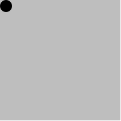
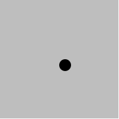

Takdim
Merhaba,
Yazılım Atölyemize hoş geldiniz. Bu sayfada eğitim içeriği ve kullandığımız materyaller hakkında bilgiler bulabilirsiniz.
Yazılım Atölyesi nedir?
Yazılım Atölyesi genel programlama tekniklerini öğretir ve gençlerin problem çözme kabiliyetlerini geliştirebilecekleri bir müfredat sunar. Öğrenciler Tasarım Reçetesi olarak isimlendrilen bir yöntem kullanarak öncelikle karşılaştıkları problemi anlamaya yönlendirilir. Problem anlaşıldıktan sonra uygun bir yöntem kullanılarak çözüm üretilir.
Derslerimiz programlama öğrenmek isteyen herkese açık ve ücretsizdir. 12-20 yaş arası gençleri özellikle bekliyoruz. Derslere katılmak için herhangibir programlama bilgisi gerekmemektedir.
Yazılım Atölyesi ne DEĞİLDİR?
Aşağıda maddeler halinde sıraladığımız konular Yazılım Atölyesi'nin amacı dahilinde değildir.
- Genel bilgisayar kullanımı
- Word, Excel, Powerpoint programları
- Web sitesi hazırlama
- iOS/Android uygulamaları geliştirme
Kaynaklar & Materyaller
Ders süresince aşağıdaki materyal ve kaynaklardan faydalanıyor olacağız. Tüm bu kaynaklar, alanlarında yetkin araştırmacılar tarafından geliştirilmiş ve siz öğrencilerin kullanımına ücretsiz olarak sunulmuştur:
Almanca
- Kitap: Schreibe Dein Programm!
- Eğitim videoları: Informatik I - Database Systems Research Group at U Tübingen
- Racket dökümantasyon: Sprachebenen und Material zu Schreibe Dein Programm!
İngilizce
- Kitap: How to Design Programs
- Racket dokümantasyon: Racket Documentation
Kurulum ve Basit Hesaplamalar
Bu dersimizde;
DrRacketkurulumu ve ayarları- Basit hesaplamaler
- Sayılar, metinler, mantıksal ifadeler ve resimler
konularını çalışacağız. Haydi başlayalım...
Ders Videosu
DrRacket: Kurulum ve Ayarlar
İlk olarak aşağıdaki bağlantıyı kullanarak DrRacket programını indirelim, kuralım ve ayarlarını yapalım:
https://download.racket-lang.org/
DrRacket istenirse Almanca olarak da kullanılabilir.
Help > Deutsche Benützeroberflache für DrRacket > In Ordnung - Beenden
Bu ayarı yaptıktan sonra DrRacket programını yeniden başlatmanız gerekmektedir.
DrRacket, programlamaya giriş eğitimini kolaylaştırmak için bizlere yardımcı diller ve eğitim paketleri sunar. Şimdi bu ayarları yapalım:
Language > Choose Language > Schreibe Dein Programm - Anfänger
Language > Add Teachpack > Image.rkt
Dil ve eğitim paketi seçtikten sonra Run tuşuna basarak yaptığımız değişiklikleri kullanıma alalım.

DrRacket iki ayrı pencereden oluşur. Bunlar Tanımlama Penceresi (Definition Window) ve Etkileşim Penceresi (Interaktion Window) olarak adlandırılır.
Etkileşim penceresini kullanarak Racket dilini tanımaya başlayalım.
Basit Hesaplamalar
Etkileşim penceresini bir hesap makinası gibi düşünebilirsiniz. Haydi ona basit bir şeyler soralım:
42
Ya da:
3.141592653
Daha karışık bir soru:
(+ 40 2)
Yukarıda farkında olmadan ilk fonksiyon çağırımınızı yapmış oldunuz. + fonksiyonun adı, 40 ve 2 parametreleri.
Kural: Fonksiyonlar parantez içinde yazılır.
Kural: Fonksiyon adı parametrelerden önce yazılır. (Prefix Notation)
Kural: Fonksiyon adı ve parameteleri arasına boşluk karakteri yazılır. (function argument1 argument2 argument3 ...)
Daha Karmaşık Hesaplamalar
İç içe geçmiş, daha kompleks sorular da sorabiliriz.
(+ (+ 20 20) (+ 1 1))
Kural: Hesaplama içeriden dışarıya doğru yapılır. İlk önce en içteki parantezin değeri hesaplanır. Daha sonra çıkan sonuç ile hesaba devam edilir.
Mesela, aşağıdaki matematiksel ifadeyi aşama aşama racket dilinde yazmaya çalışalım.
10 / 2 - 2 * 4
Matematikte kural olarak çarpma ve bölme işleminin önceliği vardır:
(10 / 2) - (2 * 4)
Daha sonra da toplama ve çıkarma işlemleri yapılır:
((10 / 2) - (2 * 4))
racket dilinde yazmak istersek:
(- (/ 10 2) (* 2 4))
Sadece Sayılar mı var?
Racket dilinin yapı taşları arasında sayılardan başka türler de var. Örneğin:
| Signature | Tür | Örnekler |
|---|---|---|
| number | Sayılar | 0, 1983, -42, 3.14, 1/2, √2̅ |
| string | Metinler | "Fatih", "x", " " |
| boolean | Mantıksal değerler (doğru, yanlış) | #t, #f |
| image | Resimler | ✰, □ |
Yukarıdaki tabloda gördüğünüz örneklere programlama dillerinde Literals ya da Constants denir. Yani yapıtaşları, en basit değerler. Daha fazla basitleştirilemezler.
string (Metinler)
racket programlama dilinde (ve daha bir çok dilde) tırnak işareti (") ile başlayıp biten karakter dizilerine string denir. Örneğin:
"Fatih"
"Merhaba Dünya"
" "
string türünden değerler kullanarak da hesaplamalar yapabiliriz:
> (string-append "Merhaba" "Dünya")
"MerhabaDünya"
> (string-length "Selam")
5
> (string? "42")
#t
boolean (Mantıksal ifadeler)
Programlamada sık kullanılan diğer bir tür de boolean diye adlandırdığımız mantıksal ifadelerdir. Sadece 2 adet boolean değer vardır: #t (True) ve #f (False).
#t
#f
boolean değerler kullanarak yaptığımız hesaplamalara örnek:
> (and #t #f)
#f
> (or #t #f)
#t
> (> 42 14)
#t
image (Resimler)
racket'da bulabileceğiniz bir başka değer ise image (Resim). Aşağıdaki ifadeyi çalıştırırsanız size 50 yarıçapında, içi dolu, kırmızı bir daire resmi üretir.
(circle 50 "solid" "red")
İPUCU: DrRacket etkileşim penceresinde
ESC+Ptus kombinasyonu ile en son yazdığınız satırı geri çağırabilirsiniz.
(rectangle 100 50 "outline" "blue")

image türünden değerler kullanarak yapabileceğimiz işlemlere örnek olarak:
(above (circle 20 "solid" "red") (rectangle 100 50 "solid" "blue"))
(overlay (circle 30 "solid" "red") (rectangle 200 100 "outline" "black"))
Bknz: circle, rectangle, above, overlay, overlay/xy
İfadelerin İsimlendirilmesi: define
Yazdığımız ifadelere bir isim vererek onları daha sonra kullanabiliriz:
(define pi 3.141592653)
(define fatih-tel "+49 111222333")
(define mavi-daire (circle 100 "solid" "blue"))
(define gün-dakika (* 24 60))
(define ... ...) özel bir form. Bu form hesaplanan bir şey değil, bir efekti var. İkinci parametredeki ifadeyi birinci parametredeki isme bağlıyor.
(define isim ifade)
Kural: isimler ( ) [ ] { } " , ' ` ; # | \ karakterleri ile başlayamaz.
Kural: isimler bir sayı ile eşit olamaz
Kural: İsimler space, tab, return karakterleri içeremez.
Kural: daha önce başka bir değere bağlanmış olmamalı.
Kural: Büyük/küçük karakter farketmiyor.
Aşağıdaki örneğin yukarıdaki kurallara uyup uymadığına inceleyelim:
(define eu->us$ 1.02)
Alıştırmalar
DrRacketprogramını web sayfasından indirerek bilgisayarımıza kuralım!
https://download.racket-lang.org/
-
Derste anlatıldığı gibi
DrRacketiçin dil ve eğitim paketi ayarlarını yapalım. Dil olarakSchreibe Dein Programm - Anfänger, eğitim paketi olarak daImage.rktsecelim. -
Aşağıdaki matematiksel ifadeleri
racketdiline çevirerekEtkileşim Penceresi'nde çalıştıralım:
42 * 6
23 + (42 / 7)
(12 * 5) + (4 * (22 + 17))
34 - 14 * 2 + 12 / 4
- Aşağıdaki değerlerin hangi türde olduklarını tahmin edebilir misin?
string?,number?,boolean?veimage?fonksiyonlarını kullanarak doğru tahmin edip etmediğini test edebilirsin.
- 42
- "56"
- 46.5
- 15/7
- "number"
- #t
- #true
- "true"
- True
- Şimdiye kadar öğrendiklerimizi kullanarak Almanya'nın bayrağını çizebilir misin? Siyah, kırmızı ve altın rengi olmak üzere 3 tane dikdörtgene ihtiyacımız var. Bunları üst üste koyarsak oldu demektir:

Ev Ödevi
- Racket dili tarafından tanımlanmış circle, rectangle, star, overlay ve overlay/xy gibi fonksiyonları kullanarak Türk Bayrağımızı çizelim!

Kaynaklar
Bu dersi daha iyi anlayabilmek için aşağıdaki kaynaklardan faydalanabilirsiniz:
- Kitap (Almanca): Schreibe Dein Programm! Sayfa 40'a kadar.
- Video (Almanca): DrRacket, REPL, Auswertung, Literale, komplexe Ausdrucke
- Video (Almanca): Spezialform define, İdentifier, Definitionsfenster
- Video (Almanca): Lambda-Abstraktion, Funktionsdefinition, Applikation
Ders 2
İlk dersimizde hep daha önce yazılmış olan fonksiyonları kullandık. Bu dersimizde ise lambda fonksiyonunu kullanarak parametre alabilen fonksiyonlar yazmayı öğreneceğiz.
Haydi başlayalım...
Ders Notları
İlk dersimizde +, odd?, string-append, circle gibi daha önceden tanımlanmış fonksiyonları kullanarak bazı işler yapmaya çalıştık. Ancak henüz kendimiz bir fonksiyon tanımlamadık. Bu dersimizde lambda ifadesini kullanarak bir değişken alabilen fonksiyonların nasıl tanımlandığını öğreneceğiz.
Fonksiyonlar (Prosedürler): lambda
Şimdi birlikte elektrik faturamızı hesaplayabilmek için bir formül yazalım. Benim kullandığım elektrik şirketinin fiyatlandırma kuralı şu şekilde:
Kullanım Bedeli (Arbeitspreis) = 17,45 ct/kWh
Taban Fiyat (Grundpreis) = 10,16 €/Monat
Bu şirket taban fiyat olarak aylık 10,16 Euro alıyor. Bunun üzerine kullandığımız her kWh elektrik için 17.45 Cents ödüyoruz. Matematiksel olarak ifade etmek gerekirse;
Aylık Fatura = 10.16 + ((17.45 * KULLANIM-MIKTARI) / 100))
Örneğin, aylık 350 kWh elektrik kullanıldığında;
17.45 * 350 = 6107.5 Cents
6107.5 Cents / 100 = 61.075 Euro
61.075 + 10.16 = 71.235 Euro
Bunu Racket dilinde yazalım:
(+ 10.16 (/ (* 17.45 KULLANIM-MIKTARI) 100))
Bu ifadeyi bu çalıştırabilmek için KULLANIM-MIKTARI yazan yere gerçek değerler vermemiz gerekecek. Örneğin, yine 350 kWh elektrik kullanıldığını varsayarsak:
(+ 10.16 (/ (* 17.45 350) 100))
... sonucun 71.235 olduğunu görebiliriz.
Peki bu ifadeyi içinde değişken olacak şekilde kullanmak istesek? Yani kullanılan elektrik miktarı değiştikçe hesaplayabilen bir fonksiyon yazmak istesek. lambda fonksiyonu tam da bu iş için var:
(lambda (...) ...)
lambda birinci parametrede verdiğimiz değişken isimlerini ikinci parametredeki ifadece yerine koyarak bize bir fonksiyon (prosedür) geri döner.
(lambda (x) (+ x 1))
Üretilen bu fonksiyona define kullanrak bir isim verebiliriz.
(define bir-ekle (lambda (x) (+ x 1)))
Örneğimize geri dönecek olursak:
(define fatura-hesapla
(lambda (x)
(+ 10.16 (/ (* 17.45 x) 100))))
Örnek Fonksiyonlar
Bir sayı alan ve verilen sayının karesini hesaplayan bir fonksiyon yazalım:
(define karesi
(lambda (x)
(* x x)))
Dikdörtgenin yüksekliği ve genişliğini temsil eden 2 sayı alan ve dikdörtgenin alanını hesaplayan bir fonksiyon yazalım.
(define dikdortgen-alani
(lambda (genislik yukseklik)
(* genislik yukseklik)))
Roketin x koordinatini temsil eden bir sayi alan ve roketi 200x200 boyutlarında boş bir arka plan üzerine (x, 100) noktasina yerleştiren bir fonksiyon yazalım.
(define roket (circle 20 "solid" "red"))
(define arka-plan (empty-scene 200 200))
(define giden-roket
(lambda (x)
(place-image roket x 100 arka-plan)))
Language > Add Teackpack menüsünden universe.ss isimli eğitim paketini yüklerseniz (Run butonuna basmayı unutmayalım), yazdığınız giden-roket programını bir anımasyon haline getirebilirsiniz.
(animate giden-roket)
Alıştırmalar
Aşağıdaki fonksiyon çağırımlarını inceleyin.
(karesi 3)
(bir-ekle 42)
(tek? 17)
(+ (- 42 34) 15)
(string->number 54)
(above (circle 20 "solid" "red") (rectangle 100 50 "solid" "blue"))
(define pi 3.141592653)
(animate bir-ekle)
(zamazingo 42)
-
Her bir satırda çağırılan fonksiyonların adını yazın!
-
Yukarıdaki fonksiyonların adlarına ve aldığı argümanlara bakarak ne hesaplıyor olabileceklerini tahmin edebilir misiniz?
-
Fonksiyon çağırımlarını inceleyin ve kaçar adet argüman aldıklarını yazın!
Ev Ödevi
Negatife çevir
Bir sayı alan ve bu sayının negatifini dönen bir fonksiyon yazalım.
Örnekler:
0 -> 0
1 -> -1
-4 -> 4
Üçgenin alanı
Üçgenin taban uzunluğu ve yüksekliğini temsil eden 2 sayı alan ve üçgenin alanını hesaplayan bir fonkksiyon yazalım.
Örnekler:
0 4 -> 0
3 4 -> 6
8 10 -> 40
Pisagor Bağıntısı
İki kenar uzunluğu verilen bir dik üçgenin hipotenüsünü hesaplayalayan fonksiyon yazalım. Hatırlamak gerekirse; iki dik kenarın karelerinin toplamı, hipotenüsün karesine eşittir.
Örnekler:
3 4 -> 5
5 12 -> 13
8 15 -> 17
7 24 -> 25
Animasyon
Sahnenin sağ üst köşesinden başlayarak sağ alt köşesine doğru giden siyah bir top animasyonu yapalım. Bunu için bir sayı alan ve resim üreten bir fonksiyon yazmamız gerekecek. Daha sonra bu fonksiyonu animate kullanarak animasyona çevirebiliriz.
Ders 3
Bu dersimizde problem çözerken bize yardımcı olan Tasarım Reçetesi'ni öğrenecek ve onu kullanarak yeni fonksiyonlar tanımlayacağız.
Haydi başlayalım...
Ders Notları
Önceki derslerimizde çok basit işler yapan fonksiyonlar tanımladık. Bazılarını kolayca yazabildik, ancak işler zorlaştıkça hatasız çalışan kodu üretebilmek o kadar da kolay olmayabiliyor. Bir çözüm üretebilmek için öncelikle problemin kendisini analiz edip iyice anlamamız gerekiyor. İşte bu aşamada Tasarım Reçetesi diye adlandırdığımız bir yöntem bize yardımcı olacak.
Tasarım Reçetesi
Tasarım reçetesi, problem tanımından yola çıkarak kendimize sorular sora sora, sorunu çözen bir programa ulaşmak için adım adım ilerleyebileceğimiz bir süreç sunar.
Bu yaklaşımın yeniliği, başlangıç seviyesi programlar için ara ürünlerin oluşturulmasıdır. Öğrenci problemi çözerken zorlandığında, bir uzman veya bir eğitmen mevcut ara ürünleri inceleyerek yardımcı olabilir. Bunun için tasarım sürecindeki genel soruları kullarak öğrencinin problemi daha iyi anlamasına yardımcı olur ve hatasını kendisinin bulmasını sağlamaya çalışır. İşte bu kendi kendini güçlendiren süreç, programlama ve program tasarımı arasındaki temel farktır.
Şimdi de tasarım reçetesini oluşturan ara ürünleri inceleyelim:
1. Açıklama
İlk olarak fonksiyonun önüne bu fonksiyonun neyi hesapladığı anlatan kısa ve öz bir açıklama yazarız. Örnek vermek gerekirse;
; Bir sayı alır ve bu sayının karesini hesaplar.
Dikkatinizi çektiyse açıklama kısmina ; işareti ile başladık. Yani açıklamayı yorum satırı olarak yazdık. Dolayısı ile bu kısım bilgisayar için değil, biz insanlar için. Bu fonksiyonu kullanmak isteyen biri kodu inceleme gereği duymadan açıklama kısmına okuyarak fonksiyonun ne iş yaptığını anlayabilmeli.
2. Sözleşme (İmza)
İkinci olarak, programın okunabilirliğini arttırmak için fonksiyonun parametre olarak ne tür veriler beklediğini ve ne tür bir veri döndüğünü açıklayan sözleşme ile destekleriz. Bir fonksiyonun sözleşmesi şu formdadır:
(: fonksiyonun-adı (parametre1 . . . parametreN -> çıktı))
Sözleşme fonksiyonu (:) ilk parametre olarak fonksiyonun adını, ikinci parametre olarak da imzasını alır. Bu imzanın ortasında bir ok -> vardır ve bu nedenle bir fonksiyonu temsil eder. Okun solunda fonksiyonun giriş olarak kabul ettiği değerler, okun sağında ise çıkan değer bulunur. Örnek olarak:
(: karesi (number -> number))
Bu sözleşme şu şekilde okunabilir: "Karesi, girdi olarak doğal sayı kabul eden ve çıktı olarak doğal sayı üreten bir fonksiyondur."
3. Testler
Fonksiyonun sözleşmesine ve açıklamasına uygun örnekler kullanarak testler yazarak fonksiyonun tüm testleri geçtiğinden emin oluruz. Problemi daha iyi anlayabilmek ve hataları önceden keşfedebilmek için bu adım çok önemlidir. Testler ayrıca, fonksiyonu sonradan kullanmak isteyenlerin fonksiyonun ne yaptığını anlamasına yardımcı olur. Bir fonksiyonu test etmenin yollarından bir tanesi check-expect fonksiyonunu kullanmaktır:
(check-expect (fonksiyonun-adı parametre1 ... parametreN) sonuç)
check-expect fonksiyonu (yukarıda da görülebileceği üzere) 2 parametre alır: ifade ve beklenen ifade. Eğer bu iki ifade aynı sonucu üretiyorsa testi geçtik demektir. Aksi takdirde hata üretir.
Örnek vermek gerekirse:
(check-expect (karesi 0) 0)
(check-expect (karesi 2) 4)
(check-expect (karesi -3) 9)
4. Kod
Artık çözülmesi gereken problemi daha iyi anladığımıza göre önce fonksiyonun şablonunu, sonra da kodunu yazabiliriz.
Şablon:
(define karesi
(lambda (x)
(...)))
Kod:
(define karesi
(lambda (x)
(* x x)))
Örnekler
Tasarım reçetesini kullanmayı öğrenmek için, önceki derslerimizde tanımladığımız fonksiyonları şimdi bir de bu yöntemi kullanarak tanımlayalım. Her bir aşamada tasarım reçetesinin sorularını kendimize soralım ve ara ürünleri oluşturalım. Böylece adım adım çözüme ilerleyeceğiz.
;; Soru 1: Bu fonksiyon neyi hesaplıyor?
;; Açıklama
;; Verilen sayının karesini hesaplar
;; Soru 2: Bu fonksiyon ne tür veriler tüketiyor ve üretiyor?
;; Sözleşme
(: karesi (integer -> integer))
;; Soru 3: Bir kaç örnek verebilir misin?
;; Testler
(check-expect (karesi 0) 0)
(check-expect (karesi 2) 4)
(check-expect (karesi -3) 9)
;; Soru 4: Son olarak fonksiyonun şablonunu ve kodunu yazabilir misin?
;; Şablon
;; (define karesi
;; (lambda (x)
;; (...)))
;; Kod
(define karesi
(lambda (x)
(* x x)))
;; Açıklama:
;; Yüksekliği ve genişliği verilen dikdörtgenin alanını hesaplar
;; Sözleşme
(: dikdortgen-alani (integer integer -> integer))
;; Testler:
(check-expect (dikdortgen-alani 1 1) 1)
(check-expect (dikdortgen-alani 1 2) 2)
(check-expect (dikdortgen-alani 3 5) 15)
;; Kod
(define dikdortgen-alani
(lambda (genislik yukseklik)
(* genislik yukseklik)))
;; Açıklama:
;; Taban fiyat 10.16 Euro ve kullanım bedeli 17.45 Cents/KWh olmak üzere,
;; verilen kullanım miktarı için aylık faturayı hesaplar
;; Sözleşme:
(: fatura-hesapla (rational -> rational))
;; Testler:
(check-within (fatura-hesapla 0) 10.16 0.01)
;; Kod:
(define fatura-hesapla
(lambda (x)
(+ 10.16 (/ (* 17.45 x) 100))))
(define roket (circle 20 "solid" "red"))
(define arka-plan (rectangle 200 200 "solid" "Medium Cyan"))
;; Açıklama:
;; Verilen x koordinatına göre rocket resmini arka-planda gösterir.
;; y koordnatı arka-planın ortası olarak sabit kalır.
;; Sözleşme
(: giden-roket (integer -> image))
;; Testler:
(check-expect (giden-roket 30) (overlay/xy roket -30 -100 arka-plan))
(check-expect (giden-roket 0) (overlay/xy roket 0 -100 arka-plan))
;; Kod
(define giden-roket
(lambda (x)
(overlay/xy roket (* -1 x) -100 arka-plan)))
Alıştırmalar
Açıklama:
Ev Ödevi
Aşağıdaki ödevleri yaparken her bir fonksiyon için Açıklama, Sözleşme, Testler ve Kod aşamalarını tek tek yapmayı unutmayalım.
Önceki Ödevler
Ders 2'nin ödevlerinde negatife çevir, üçgenin alanı ve pisagor bağıntısı fonksiyonlarının sadece kodunu yazmanızı istemiştik. Şimdi ise bu fonksiyonarlı tasarım reçetesine uygun olarak düzenleyelim. Her bir fonksiyona Açıkmala, Sözleşme ve Test bölümlerini de ekleyelim.
Birler Basamağı
Bir sayı alan ve aldığı sayının birler basamağındaki rakamı dönen bir fonksiyon yaz.
Örnekler:
0 -> 0
7 -> 7
18 -> 8
79 -> 9
296 -> 6
8645 -> 5
Onlar Basamagi
Bir sayı alan ve aldığı sayının onlar basamağındaki rakamı dönen bir fonksiyon yaz.
Örnekler:
0 -> 0
7 -> 0
18 -> 1
79 -> 7
296 -> 9
8645 -> 4
Yüzler basamağı
Bir sayı alan ve aldığı sayının yüzler basamağındaki rakamı dönen bir fonksiyon yaz.
Örnekler:
0 -> 0
7 -> 0
18 -> 0
79 -> 0
296 -> 2
8645 -> 6
Animasyon
x ve y koordinatlarını temsil eden iki sayı alan ve verilen bu koordinatlara göre 10 yarıçapında siyah bir daireyi 200x200 boyutlarında gri bir karenin üzerine yerleştiren bir fonksiyon yaz.
Örnek 1: x=0 ve y=0 değerleri için;

Örnek 2: x=100 ve y=100 değerleri için;

animate fonksiyonunu kullanarak yukarıda yazdığın fonksiyonu bir anımasyona çevir!
Ders 4
Bu dersimizde koşul ifadelerini (conditionals) kullanarak programımıza nasıl yön verebileceğimizi öğreneceğiz.
Haydi başlayalım...
Ders Notları
Bazen hesaplamaların duruma bağlı olarak farklı şekilde ilerlemesi gerekebilir. Örneğin, zıplayan top animasyonu yaptığımızı düşünelim. Top serbest düşüş yaparken program normal bir şekilde ilerler, ancak top canvas'ın alt kenarına eriştiğinde onun daha fazla aşağı inmesini engellememiz gerekir. Yani bir nevi bir karar mekanızması oluşturmamız gerekir. cond fonksiyonu tam da bu işi yapmaya yarıyor. Yapısı şu şekilde ifade edilebilir:
(cond [soru-ifadesi-1 cevap-ifadesi-1]
[soru-ifadesi-2 cevap-ifadesi-2]
...
[else cevap-ifadesi])
cond kendisine verilen soru ifadelerini sırası ile çalıştırarak ilk #true dönen ifadeye karşılık gelen cevap ifadesini değerlendirir. Soru ifadelerinden hiçbiri #true olarak değerlendirilmezse, koşul değeri else yan tümcesinin cevap ifadesidir. Eğer else kısmı yok ise ve soru ifadelerinden hiç biri #true olarak değerlendirilmedi ise bu bir hatadır. Yada verilen soru ifadelerinden herhangi biri boolean (#true yada #false) dönen bir ifade değilse, bu durumda da bir hata mesajı döner.
Örnekler üzerinden inceleyelim:
;; Yaşı verilen bir kişinin ehliyet alıp alamayacağını söyler.
;; Bir sayı alır, verilen sayı 17'ye eşit ya da daha büyükse #t
;; değil ise #f döner
(: ehliyet-alabilir (integer -> boolean))
(check-expect (ehliyet-alabilir 1) #f)
(check-expect (ehliyet-alabilir 16) #f)
(check-expect (ehliyet-alabilir 17) #t)
(check-expect (ehliyet-alabilir 39) #t)
(define ehliyet-alabilir
(lambda (yaş)
(cond
[(< yaş 17) #f]
[else #t])))
;; Verilen yaş değerine göre hangi okula gidilmesi gerektiğini söyler.
;; < 0 -> "Okul yok"
;; 0 - 5 -> "Kindergarten"
;; 6 - 10 -> "Grundschule"
;; 11 - 19 -> "Gymnasium"
;; 20 -> ... -> "Universitaet"
(check-expect (hangi-okul 5) "Kindergarten")
(check-expect (hangi-okul 6) "Grundschule")
(check-expect (hangi-okul 10) "Grundschule")
(check-expect (hangi-okul 11) "Gymnasium")
(check-expect (hangi-okul 14) "Gymnasium")
(check-expect (hangi-okul 60) "Universitaet")
(check-expect (hangi-okul 19) "Gymnasium")
(check-expect (hangi-okul 20) "Universitaet")
(: hangi-okul (integer -> string))
(define hangi-okul
(lambda (yaş)
(cond
[(<= yaş 0) "Okul yok"]
[(<= yaş 5) "Kindergarten"]
[(and (>= yaş 6) (<= yaş 10)) "Grundschule"]
[(and (>= yaş 11) (<= yaş 19)) "Gymnasium"]
[else "Universitaet"])))
;; Bir sayı alır ve trafik lambası resmi üretir.
;; Verilen sayı;
;; 10'a eşit ya da daha küçükse kırmızı ışık,
;; 12'ye eşit ya da daha küçükse sarı ışık,
;; 17'ye eşit ya da dağa küçükse yeşik ışık,
;; 19'a eşit ya da daha küçükse sarı ışık,
;; 19'dan daha sonra da kırmızı ışık yanıyormuş gibi gösterir.
(: trafik-lambasi-sn (rational -> image))
(check-expect (trafik-lambasi-sn 1) kirmizi-isik)
(check-expect (trafik-lambasi-sn 9) kirmizi-isik)
(check-expect (trafik-lambasi-sn 10) kirmizi-isik)
(check-expect (trafik-lambasi-sn 11) sari-isik)
(check-expect (trafik-lambasi-sn 12) sari-isik)
(check-expect (trafik-lambasi-sn 13) yesil-isik)
(check-expect (trafik-lambasi-sn 17) yesil-isik)
(check-expect (trafik-lambasi-sn 18) sari-isik)
(check-expect (trafik-lambasi-sn 19) sari-isik)
(check-expect (trafik-lambasi-sn 20) kirmizi-isik)
(check-expect (trafik-lambasi-sn 180) kirmizi-isik)
(define kirmizi (circle 40 "solid" "red"))
(define sari (circle 40 "solid" "yellow"))
(define yesil (circle 40 "solid" "green"))
(define gri (circle 40 "solid" "grey"))
(define lamba (rectangle 100 260 "solid" "black"))
(define kirmizi-isik (overlay (above kirmizi gri gri) lamba))
(define sari-isik (overlay (above gri sari gri) lamba))
(define yesil-isik (overlay (above gri gri yesil) lamba))
(define trafik-lambasi-sn
(lambda (sn)
(cond
((<= sn 10) kirmizi-isik)
((<= sn 12) sari-isik)
((<= sn 17) yesil-isik)
((<= sn 19) sari-isik)
(else kirmizi-isik))))
;; Bir sayı alır ve bu sayıyı 28'e bölerek trafik-lambasi-sn fonksiyonunu çağırarak bir resim üretir.
;; animate fonksiyonu her saniyede 28 kare resim gösterdiği için böyle bir yöntem kullanıyoruz.
(: trafik-lambasi (integer -> image))
(check-expect (trafik-lambasi 0) kirmizi-isik)
(check-expect (trafik-lambasi 1) kirmizi-isik)
(check-expect (trafik-lambasi 308) sari-isik)
(define trafik-lambasi
(lambda (sn)
(trafik-lambasi-sn (/ sn 28))))
Ev Ödevi
-
Bir sayı alan ve bu sayı tek ise #t, cift ise #f dönen bir fonksiyon yazalım. Sayının tek mi çift mi olduğunu anlamak için
modulofonksiyonunu kullanabilrsiniz. Hali hazırda tanımlanmış olaneven?yadaodd?fonksiyonlarını kullanmayalım. -
animatefonksiyonunu kullanarak zıplayan bir top anımasyonu üretebilir misin? İlk önce 200x200 bir karenin üzerine 10 yarıçapında bir daire çizerek başlayabilirsin. Daha sonra bir sayı alıp bir resim üreten bir fonksiyon yazman gerekecek. Bu fonksiyon verilen sayı değerine göre daireninykoordinatını yukarı ya da aşağı doğru hareket ettirecek.
Ders 5
Bu dersimizde define-record-procedures fonksiyonunu kullanarak yeni veri yapıları üretmeyi öğreneceğiz.
Haydi başlayalım...
Ders Notları
(define-record ogrenci
make-ogrenci
ogrenci?
(ogrenci-adi string)
(ogrenci-soyadi string))
(define ben (make-ogrenci "fatih" "koksal"))
(define sen (make-ogrenci "ali" "kurnaz"))
;; Açıklama
;; Bir öğrenci alır ve onun tam adını döner
;; Sozlesme
(: tam-adi (ogrenci -> string))
;; Testler
(check-expect (tam-adi ben) "fatih koksal")
(check-expect (tam-adi sen) "ali kurnaz")
(check-expect (tam-adi (make-ogrenci "yusuf islam" "dagdelen")) "yusuf islam dagdelen")
;; Kod
(define tam-adi
(lambda (ogrenci)
(string-append (ogrenci-adi ogrenci) " " (ogrenci-soyadi ogrenci))))
(define-record nokta
make-nokta
nokta?
(nokta-x integer)
(nokta-y integer))
;; İki nokta alır ve birbirleri ile toplayarak yeni bir nokta döner
;; İki noktanın toplamı x ve y koordinatlarının toplamına eşittir
(: iki-nokta-toplami (nokta nokta -> nokta))
(check-expect (iki-nokta-toplami (make-nokta 1 1) (make-nokta 2 2)) (make-nokta 3 3))
(check-expect (iki-nokta-toplami (make-nokta 0 4) (make-nokta 1 3)) (make-nokta 1 7))
(define iki-nokta-toplami
(lambda (n1 n2)
(make-nokta (+ (nokta-x n1) (nokta-x n2)) (+ (nokta-y n1) (nokta-y n2)))))
(define-record nokta
make-nokta
nokta?
(nokta-x integer)
(nokta-y integer))
;; Koordinat duzlemi uzerinde 2 nokta alir ve aralarindaki uzakligi hesaplar
(: iki-nokta-arasindaki-uzaklik (nokta nokta -> rational))
(check-expect (iki-nokta-arasindaki-uzaklik (make-nokta 4 0) (make-nokta 0 3)) 5)
(check-expect (iki-nokta-arasindaki-uzaklik (make-nokta 0 0) (make-nokta 3 0)) 3)
(check-expect (iki-nokta-arasindaki-uzaklik (make-nokta 0 0) (make-nokta 0 2)) 2)
(check-within (iki-nokta-arasindaki-uzaklik (make-nokta 5 0) (make-nokta 0 3)) (sqrt 34) 0.0000001)
(define iki-nokta-arasindaki-uzaklik
(lambda (n1 n2)
(sqrt (+ (karesi (- (nokta-y n2) (nokta-y n1))) (karesi (- (nokta-x n2) (nokta-x n1)))))))
(define karesi
(lambda (x)
(* x x)))
Ev Ödevi
TODO
Ders 6
Bu dersimizde liste veri yapısını ve cons, first, rest fonksiyonlarını kullanarak listeler alan veya üreten foknsiyonları inceleyeceğiz.
Haydi başlayalım...
Ders Notları
;; sayi-listesi
;; - empty
;; - (cons sayi sayi-listesi)
;; Bir sayı-listesi alır ve bu sayıları 2 ile çarparak yeni bir sayı listesi döner
;; [] -> []
;; [1] -> [2]
;; [3, 7] -> [6, 14]
;; (: liste-carpi-2 (sayi-listesi -> sayi-listesi))
(check-expect (liste-carpi-2 empty) empty)
(check-expect (liste-carpi-2 (cons 1 empty)) (cons 2 empty))
(check-expect (liste-carpi-2 (cons 3 (cons 7 empty))) (cons 6 (cons 14 empty)))
(check-expect (liste-carpi-2 (cons 2 (cons 8 (cons 21 empty)))) (cons 4 (cons 16 (cons 42 empty))))
(define liste-carpi-2
(lambda (lst)
(cond
((empty? lst) empty)
(else (cons (* 2 (first lst)) (liste-carpi-2 (rest lst)))))))
;; Bir sayı listesi alır ve her bir elemanın karesini hesaplayarak yeni bir liste döner.
;; empty -> empty
;; [1] -> [1](cons 1 (cons 2 empty))
;; [1, 2] -> [1, 4]
;; [2, 3, 5] -> [4, 9, 25]
;; ( : liste-karesi (sayi-listesi -> sayi-listesi))
(check-expect (liste-karesi empty) empty)
(check-expect (liste-karesi (cons 1 empty)) (cons 1 empty))
(check-expect (liste-karesi (cons 1 (cons 2 empty))) (cons 1 (cons 4 empty)))
(check-expect (liste-karesi (cons 2 (cons 3 (cons 5 empty)))) (cons 4 (cons 9 (cons 25 empty))))
(define liste-karesi
(lambda (lst)
(cond
((empty? lst) empty)
(else (cons (karesi (first lst)) (liste-karesi (rest lst)))))))
(define karesi
(lambda (x)
(* x x )))
;; string-listesi
;; - empty
;; - (cons string string-listesi)
;; Bir string listesi alır ve liste içerisindeki tüm stringleri ard arda ekler.
;; empty -> ""
;; ["fatih"] -> "fatih"
;; ["fatih", "koksal"] -> "fatih koksal"
;; ["mehmet", "fatih", "koksal"] -> "mehmet fatih koksal"
;; (: liste-birlestir (string-listesi -> string))
(check-expect (liste-birlestir empty) "")
(check-expect (liste-birlestir (cons "fatih" empty)) "fatih ")
(check-expect (liste-birlestir (cons "fatih" (cons "koksal" empty))) "fatih koksal ")
(check-expect (liste-birlestir (cons "mehmet" (cons "fatih" (cons "koksal" empty)))) "mehmet fatih koksal ")
(define liste-birlestir
(lambda (lst)
(cond
((empty? lst) "")
(else (string-append (first lst) " " (liste-birlestir (rest lst)))))))
Ev Ödevi
-
Bir image listesi alan ve listedeki tüm image'ları üste üste koyarak yeni bir image oluşturan bir fonksiyon yazalım. (İpucu: Derste yaptığımız string listesi alarak tüm stringleri birleştiren fonksiyona benzer bir çözümü var).
-
Bir sayı listesi ve bir sayı alan, listedeki sayıları tek tek ikinci parametrede aldığı sayıya ekleyen bir fonsiyon yazalım. Örnekler:
- [] 0 -> 0
- [1] 0 -> 1
- [2, 5] 4 -> 11
-
Bir nokta listesi alan ve listedeki noktaları toplayıp toplamı yeni bir nokta olarak dönen bir fonksiyon yazalım. (Hatırlatma: İki noktanın toplamı x ve y koordinatlarının ayrı ayrı toplanması ile elde edilir. (x1, y1) + (x2, y2) = (x1 + x2, y1 + y2). Örnekler:
- [] - (0, 0)
- [(1, 4)] -> (1, 4)
- [(1, 3), (3, 6)] -> (4, 9)
(define-record-procedures nokta
make-nokta
nokta?
(nokta-x
nokta-y))
- Bir
booleanlistesi alan ve eğer tüm değerler#tise#t, herhangi bir değer#fise#fdönen bir fonksiyon yazalım. Örnekler:
- [] -> #t
- [#t] -> #t
- [#f] -> #f
- [#t, #t] -> #t
- [#t, #f] -> #f
Ders 7
Bu dersimizde basit animasyonlar üretmek için kullandığımız animate fonksiyonunu hatırlattıktan sonra daha gelişmiş animasyonlar üretmemizi sağlayacak big-bang fonksiyonunu öğreneceğiz.
Haydi başlayalım...
Ders Notları
animate
Hatırlayacak olursanız animate zaman bazlı similasyonlar üretebileceğimiz basit bir animasyon fonksiyonu. Programcının görevi verilen her bir doğal sayı için image üretecek fonksiyonu sağlamak. Bu fonksiyonu animate fonksiyonuna veridiğimizde bize similasyonu gösteriyor. İmzası şu şekilde:
; (: animate ((natural -> image) -> natural))
animate fonksiyonu bir tuval açar ve saniyede 28 kez işleyen bir saat başlatır. Saatin her vuruşunda DrRacket fonksiyonun çağırımından o zamana kadar geçen vuruş sayısını resmi çizecek olan fonksiyona uygular. Üretilen her bir resmi tuvalde tek tek gösterir. Saniyede 28 kere olan bu işlem çok hızlı olduğundan biz oluşan resimleri sanki bir anımasyon gibi görürüz. Similasyon siz açılan pencereyi kapatana kadar devam eder ve geri dönüş değeri olarak o zamana kadar geçen vuruş sayısını doğal sayı olarak geri döner.
Burada dikkatimizi ilk çeken şu olmalı. animate fonksiyonu başka bir fonksiyonu parametre olarak alıyor. Bu daha önce kullandığımız fonksiyonların imzalarına pek benzemiyor. Normalde fonksiyonlar string, natural, number, boolean ya da image gibi basit veri yapılarını parametre olarak alırlar. Ama burada da gördüğümüz üzere başka fonksiyonları parametre olarak kabul eden fonksiyonlar da var. animate fonksiyonunu imzasından da görülebileceği gibi öyle herhangi bir fonksiyonu parametre olarak kabul etmiyor. natural alan ve image ureten bir fonksiyon olmalı.
İlk olarak animate fonksiyonunun nasıl çalıştığını anlamamıza da yardımcı olacak basit bir örnekle başlayalım:
(: kirmizi-rakam (natural -> image))
(define kirmizi-rakam
(lambda (t)
(place-image
(text (number->string t) 100 "red")
100 100
(empty-scene 200 200))))
kirmizi-rakam fonksiyonu animate in bizden istediği gibi bir doğal sayı alıyor ve resim üretiyor. Ürettiği resim işe verilen doğal sayının 200x200 boyutlarında boş bir sahneye kırmızı renkte yazılmış hali. kirmizi-rakam fonksiyonuna değişik doğal sayı değerleri vererek ürettiği resmi inceleyebilirsiniz.
(kirmizi-rakam 42)
Şimdi animate kullanarak similasyonu başlatabiliriz:
(animate kirmizi-rakam)
Gördüğünüz gibi animate fonksiyonu similasyonu başlatarak doğal sayıları tek tek kirmizi-rakam fonksiyonuna veriyor. kirmizi-rakam fonksiyonu ise kendisine verilen doğal sayıları kanvas'a çiziyor.
Başka bir örnek ile öğrendiklerimizi pekiştirelim:
(define ufo-sahnesi
(lambda(h)
(underlay/xy (rectangle 100 100 "solid" "white") 50 h UFO)))
(define UFO
(underlay/align "center"
"center"
(circle 10 "solid" "green")
(rectangle 40 4 "solid" "green")))
(animate ufo-sahnesi)
ufo-sahnesi fonksiyonunu dikkatlice incelerseniz UFO'nun nasıl yavaş yavaş aşağıda indiğini göreceksiniz.
big-bang
big-bang daha karmaşık similasyonlar üretebileceğimiz bir fonksiyon. Bir çok parametre alıyor, ancak biz şimdilik isteğe bağlı olan parametrelerden sadece 2 tanesini kullanacağız. İmzası şu şekilde:
;(big-bang
; <başlangıç-hali>
; (on-tick ...)
; (to-draw ... ... ...)
; ....)
big-bang ılk parametre olan başlangıç halini kullanarak bir sahne başlatıyor ve saati çalıştırıyor. Saat her vurduğunda on-tick fonksiyonuna parametre olarak verdiğimiz fonksiyona sahnenin suanki halini verip bir sonraki sahnede dünyanın nasıl değiştiğini öğreniyor. to-draw fonksiyona verdiğimiz fonksiyonu kullarak da dünyamızı sahneye çiziyor.
Kulağa çok karmaşık gelen bu tanımı anlayabilmek için daha önce animate fonksiyonu ile yaptığımız similasyonun aynısını şimdi bir de big-bang ile yapalım.
(define 1ekle
(lambda (t)
(+ 1 t)))
(big-bang
1
(on-tick 1ekle)
(to-draw kirmizi-rakam))
Animasyonumuzda değişen tek şey sahnede göstereceğimiz sayı olduğundan, dünyamızı temsilen sadece bir doğal sayı kullanıyoruz. Başlangıç hali için 1 verdik. Saat her vurduğunda bu sayının bir artmasını istedik. Sahneye çizmek için ise daha önce tanımladığımız kirmizi-rakam fonksiyonunu kullandık. big-bang ile similasyonu çalıştırdığımızda daha önce animate ile yaptığımızın aynısını üretmiş olduk.
Şimdi çok daha karmaşık bir animasyon yapalım. İçinde bulunduğu odanın duvarlarından seke seke ilerleyen kırmızı bir top yapacağız. Daha öncekine göre daha karmaşık olan bu animasyonu üretmek için dünyamızı temsilen kullandığımız veri yapısı da daha karmaşık olacak.
(define-record-procedures top
make-top
top?
(top-x
top-y
top-x-yon
top-y-yon))
top'un 4 niteliği var. x-koordinatını temsilen top-x, y-koordinatını temsilen top-y, topun x-koordunatındaki ivmesini temsilen top-x-yon ve y-koordinatındaki ivmesini temsilen top-y-yon.
Saat her vurduğunda dünyamızın nasıl değişmesini istediğimizi tick fonksiyonunda tanımlayalım.
(: tick (top -> top))
(check-expect (tick (make-top 1 50 2 1)) (make-top 3 51 2 1))
(check-expect (tick (make-top 3 51 2 1)) (make-top 5 52 2 1))
(check-expect (tick (make-top 5 52 2 1)) (make-top 7 53 2 1))
(check-expect (tick (make-top 7 53 2 1)) (make-top 9 54 2 1))
(check-expect (tick (make-top 0 53 -1 1)) (make-top 1 53 1 1))
(check-expect (tick (make-top -4 67 -5 2)) (make-top 1 67 5 2))
(check-expect (tick (make-top 200 50 3 2)) (make-top 199 50 -3 2))
(check-expect (tick (make-top 7 0 5 -2)) (make-top 7 1 5 2))
(check-expect (tick (make-top 5 -1 4 -2)) (make-top 5 1 4 2))
(check-expect (tick (make-top 50 200 2 3)) (make-top 50 199 2 -3))
(define tick
(lambda(t)
(cond
((<= (top-x t) 0) (make-top 1 (top-y t) (* -1 (top-x-yon t)) (top-y-yon t)))
((>= (top-x t) 200) (make-top 199 (top-y t) (* -1 (top-x-yon t)) (top-y-yon t)))
((<= (top-y t) 0) (make-top (top-x t) 1 (top-x-yon t) (* -1 (top-y-yon t))))
((>= (top-y t) 200) (make-top (top-x t) 199 (top-x-yon t) (* -1 (top-y-yon t))))
(else (make-top (+ (top-x t) (top-x-yon t)) (+ (top-y t) (top-y-yon t)) (top-x-yon t) (top-y-yon t))))))
Topun duvarlara çarpınca geri sekmesini, çarpmadığı zamanlarda ise x ve y koordunatlarındaki ivmelerine göre hareket etmesini istiyoruz.
Dünyamızı çizmek için ise basitçe topu boş bir sahne üzerinde x ve y koordinatına yerleştirelim.
(: draw (top -> image))
(define draw
(lambda (t)
(place-image
(circle 10 "solid" "red")
(top-x t) (top-y t)
(empty-scene 200 200))))
Ve similasyonu baslatalim:
(big-bang
(make-top 0 200 8 8)
(on-tick tick)
(to-draw draw 200 200))
Ev Ödevi
big-bang kullanarak 200x200 boyutunda bir sahnede yanyana ve aşağı doğru farklı ivmelerde hareket ederek yere çarptıklarında tekrar yukarı doğru geri zıplayan 2 tane top similasyonu yapalım. Toplardan biri mavi diğeri kırmızı olsun. Toplar ilk hareketlerine tepe noktasından (y=0) başlasınlar ve farklı ivmelerde hareket etsinler. En alt noktaya eriştiklerinde (y=200) tekrar geri zıplasınlar.
İlk önce bu iş için bize gerekli olan minimal veri yapısını belirleyelim: Toplam kaç adet top olacak? Bu toplar her iki koordinatta mı yoksa sadece tek bir koordinatta mı hareket ediyorlar? Toplar aynı hızda mı hareket ediyorlar? Bu bilgileri kullanarak top için bir veri yapısı tasarlayalım.
Her saat vurduğunda dünyamız nasıl değişecek? Topların bir sonraki hareketi nasıl olacak? Toplardan biri en alt noktaya ulaşırsa geri sekmesini nasıl sağlayacağız? Bu gibi durumları göz önünde bulundurarak bir tick fonksiyonu yazalım.
Topların görüntüsünü sahneye nasıl çizeceğiz? draw fonksiyonunu yazarak 200x200'luk boş bir sahneye iki topu birden çizelim.
big-bang fonksiyonuna dünyamızın başlangıç durumunu, on-tick için yazdığımız tick fonksiyonunu ve to-draw için yazdığımız draw fonksiyonunu vererek similasyonumuzu çalıştıralım.
(big-bang
...
(on-tick tick)
(to-draw draw)
)
Ders 8
Bu dersimizde big-bang ile yaptığımız animasyonları klavye ve mouse kullanarak interaktif bir hale getireceğiz.
Haydi başlayalım...
Ders Notları
(define-record-procedures top
make-top
top?
(top-x
top-y))
(: change (top string -> top))
(check-expect (change (make-top 100 100) "left") (make-top 90 100))
(check-expect (change (make-top 100 100) "right") (make-top 110 100))
(check-expect (change (make-top 100 100) "up") (make-top 100 90))
(check-expect (change (make-top 100 100) "down") (make-top 100 110))
(check-expect (change (make-top 0 200) "r") (make-top 100 100))
(define change
(lambda (t a-key)
(cond
[(key=? a-key "left") (make-top (- (top-x t) 10) (top-y t))]
[(key=? a-key "right") (make-top (+ (top-x t) 10) (top-y t))]
[(key=? a-key "up") (make-top (top-x t) (- (top-y t) 10))]
[(key=? a-key "down") (make-top (top-x t) (+ (top-y t) 10))]
[(key=? a-key "r") (make-top 100 100)]
[else t])))
(: jump (top integer integer string -> top))
(check-expect (jump (make-top 100 100) 50 60 "drag") (make-top 50 60))
(check-expect (jump (make-top 100 100) 50 60 "move") (make-top 100 100))
(check-expect (jump (make-top 100 100) 50 60 "button-up") (make-top 100 100))
(check-expect (jump (make-top 100 100) 50 60 "button-down") (make-top 50 60))
(define jump
(lambda (t x y m-event)
(cond
[(mouse=? m-event "drag") (make-top x y)]
[(mouse=? m-event "button-down") (make-top x y)]
[else t])))
(: draw (top -> image))
(check-expect (draw (make-top 100 100)) (place-image (circle 10 "solid" "red") 100 100 (empty-scene 200 200)))
(define draw
(lambda (t)
(place-image
(circle 10 "solid" "red")
(top-x t) (top-y t)
(empty-scene 200 200))))
(big-bang
(make-top 100 100)
(on-key change)
(on-mouse jump)
(to-draw draw 200 200))
Ev Ödevi
TODO
Ders 9
Bu dersimizde yılan oyununu yazmak için ilk adımlarımızı atacağız. Basit bir veri yapısı ile başlayarak klavye ile yönünü tayin edebildiğimiz küçük bir böcek animasyonu yapacağız.
Haydi başlayalım...
Ders Notları
(define-record-procedures yılan
yılan-oluştur
(yılan-x
yılan-y
yılan-yön))
(yılan-oluştur 0 0 "sağ")
(yılan-oluştur 100 50 "sol")
(yılan-oluştur 80 210 "yukarı")
(yılan-oluştur 0 75 "aşağı")
;; Bir yılan ve klavyeden basılan tuşu berlirten bir string alır. Eğer basılan tuş yön tuşlarından
;; biri ise yılanın yönünü uygun bir şekilde değiştirir:
;; "up" -> "yukarı"
;; "down" -> "aşağı"
;; "left" -> "sol"
;; "right" -> "sağ"
(: yön-değiştir (yılan string -> yılan))
(check-expect (yön-değiştir (yılan-oluştur 0 0 "sağ") "up") (yılan-oluştur 0 0 "yukarı"))
(check-expect (yön-değiştir (yılan-oluştur 100 50 "yukarı") "left") (yılan-oluştur 100 50 "sol"))
(check-expect (yön-değiştir (yılan-oluştur 80 20 "sol") "down") (yılan-oluştur 80 20 "aşağı"))
(check-expect (yön-değiştir (yılan-oluştur 10 90 "aşağı") "right") (yılan-oluştur 10 90 "sağ"))
(check-expect (yön-değiştir (yılan-oluştur 10 90 "aşağı") "up") (yılan-oluştur 10 90 "aşağı"))
(check-expect (yön-değiştir (yılan-oluştur 10 90 "yukarı") "down") (yılan-oluştur 10 90 "yukarı"))
(check-expect (yön-değiştir (yılan-oluştur 10 90 "sol") "right") (yılan-oluştur 10 90 "sol"))
(check-expect (yön-değiştir (yılan-oluştur 10 90 "sağ") "left") (yılan-oluştur 10 90 "sağ"))
(define yön-değiştir
(lambda (yln tuş)
(cond
[(and (key=? tuş "left") (not (string=? (yılan-yön yln) "sağ"))) (yılan-oluştur (yılan-x yln) (yılan-y yln) "sol")]
[(and (key=? tuş "right") (not (string=? (yılan-yön yln) "sol"))) (yılan-oluştur (yılan-x yln) (yılan-y yln) "sağ")]
[(and (key=? tuş "up") (not (string=? (yılan-yön yln) "aşağı"))) (yılan-oluştur (yılan-x yln) (yılan-y yln) "yukarı")]
[(and (key=? tuş "down") (not (string=? (yılan-yön yln) "yukarı"))) (yılan-oluştur (yılan-x yln) (yılan-y yln) "aşağı")]
[(key=? tuş "r") (yılan-oluştur 50 50 "sağ")]
[else yln])))
;; Bir yılan alır ve 200x200 boyutlarında boş bir sahneye yılanın x ve y koordinatlarına gelecek sekilde
;; 10x10 boyutlarında siyah içi dolu bir kare çizer.
(: çiz (yılan -> image))
(check-expect (çiz (yılan-oluştur 100 100 "sol")) (place-image (rectangle 10 10 "solid" "black") 100 100 (empty-scene 200 200)))
(define çiz
(lambda (yln)
(place-image
(rectangle 10 10 "solid" "black")
(yılan-x yln) (yılan-y yln)
(empty-scene 200 200))))
;; Bir yılan alır ve yılanın yönüne uygun bir şekilde bir sonraki sahnede nerede olması gerektiğini hesaplar.
;; Bu hesap sonucunda oluşan yeni yılanı döner.
(: ilerle (yılan -> yılan))
(check-expect (ilerle (yılan-oluştur 100 100 "sağ")) (yılan-oluştur 105 100 "sağ"))
(check-expect (ilerle (yılan-oluştur 100 100 "sol")) (yılan-oluştur 95 100 "sol"))
(check-expect (ilerle (yılan-oluştur 100 100 "yukarı")) (yılan-oluştur 100 95 "yukarı"))
(check-expect (ilerle (yılan-oluştur 100 100 "aşağı")) (yılan-oluştur 100 105 "aşağı"))
(define ilerle
(lambda (yln)
(cond
[(string=? (yılan-yön yln) "sağ") (yılan-oluştur (+ (yılan-x yln) 5) (yılan-y yln) (yılan-yön yln))]
[(string=? (yılan-yön yln) "sol") (yılan-oluştur (- (yılan-x yln) 5) (yılan-y yln) (yılan-yön yln))]
[(string=? (yılan-yön yln) "yukarı") (yılan-oluştur (yılan-x yln) (- (yılan-y yln) 5) (yılan-yön yln))]
[(string=? (yılan-yön yln) "aşağı") (yılan-oluştur (yılan-x yln) (+ (yılan-y yln) 5) (yılan-yön yln))]
[else yln])))
;; Yılanı (50,100) noktasından yönü sağ tarafa doğru olacak sekilde yerleştirerek simulasyonu başlatır.
(big-bang
(yılan-oluştur 50 100 "sağ")
(on-key yön-değiştir)
(on-tick ilerle)
(to-draw çiz 200 200))
Ev Ödevi
- Derste yaptığımız tek hücreli yılan animasyonumuz sahnenin kenarlarından çıktığında gitmeye devam ediyor, ancak biz göremiyoruz. Yılan sahnenin bir tarafından çıktığında diğer tarafından tekrar sahneye girmesini sağlayabilir misin? Yani sağ taraftan çıkarsa sol taraftan geri girecek. Ya da aşağıdan çıkarsa yukarıdan tekrar geri girecek.
Ders 10
Bu dersimizde geçen derste kaldığımız yerden devam ederek yılan duvara çarptığında oyunun bitmesini sağlayacağız. Ayrıca sahnenin rastgele bir noktasına yılanın yemesi için bir yem yerleştireceğiz.
Haydi başlayalım...
Ders Notları
(define-record-procedures yılan
yılan-oluştur
(yılan-x
yılan-y
yılan-yön
yem-x
yem-y))
(yılan-oluştur 0 0 "sağ" 50 60)
(yılan-oluştur 100 50 "sol" 20 50)
(yılan-oluştur 80 210 "yukarı" 130 70)
(yılan-oluştur 0 75 "aşağı" 20 50)
;; Bir yılan ve klavyeden basılan tuşu berlirten bir string alır. Eğer basılan tuş yön tuşlarından
;; biri ise yılanın yönünü uygun bir şekilde değiştirir:
;; "up" -> "yukarı"
;; "down" -> "aşağı"
;; "left" -> "sol"
;; "right" -> "sağ"
(: yön-değiştir (yılan string -> yılan))
(check-expect (yön-değiştir (yılan-oluştur 0 0 "sağ" 0 0) "up") (yılan-oluştur 0 0 "yukarı" 0 0))
(check-expect (yön-değiştir (yılan-oluştur 100 50 "yukarı" 0 0) "left") (yılan-oluştur 100 50 "sol" 0 0))
(check-expect (yön-değiştir (yılan-oluştur 80 20 "sol" 0 0) "down") (yılan-oluştur 80 20 "aşağı" 0 0))
(check-expect (yön-değiştir (yılan-oluştur 10 90 "aşağı" 0 0) "right") (yılan-oluştur 10 90 "sağ" 0 0))
(check-expect (yön-değiştir (yılan-oluştur 10 90 "aşağı" 0 0) "up") (yılan-oluştur 10 90 "aşağı" 0 0))
(check-expect (yön-değiştir (yılan-oluştur 10 90 "yukarı" 0 0) "down") (yılan-oluştur 10 90 "yukarı" 0 0))
(check-expect (yön-değiştir (yılan-oluştur 10 90 "sol" 0 0) "right") (yılan-oluştur 10 90 "sol" 0 0))
(check-expect (yön-değiştir (yılan-oluştur 10 90 "sağ" 0 0) "left") (yılan-oluştur 10 90 "sağ" 0 0))
(define yön-değiştir
(lambda (yln tuş)
(cond
[(and (key=? tuş "left") (not (string=? (yılan-yön yln) "sağ"))) (yılan-oluştur (yılan-x yln) (yılan-y yln) "sol" (yem-x yln) (yem-y yln))]
[(and (key=? tuş "right") (not (string=? (yılan-yön yln) "sol"))) (yılan-oluştur (yılan-x yln) (yılan-y yln) "sağ" (yem-x yln) (yem-y yln))]
[(and (key=? tuş "up") (not (string=? (yılan-yön yln) "aşağı"))) (yılan-oluştur (yılan-x yln) (yılan-y yln) "yukarı" (yem-x yln) (yem-y yln))]
[(and (key=? tuş "down") (not (string=? (yılan-yön yln) "yukarı"))) (yılan-oluştur (yılan-x yln) (yılan-y yln) "aşağı" (yem-x yln) (yem-y yln))]
[(key=? tuş "r") (yılan-oluştur 50 50 "sağ" (yem-x yln) (yem-y yln))]
[else yln])))
;; Bir yılan alır ve 200x200 boyutlarında boş bir sahneye yılanın x ve y koordinatlarına gelecek sekilde
;; 10x10 boyutlarında siyah içi dolu bir kare çizer.
(: çiz (yılan -> image))
(check-expect (çiz (yılan-oluştur 100 100 "sol" 50 50)) (place-image (rectangle 10 10 "solid" "red") 50 50 (place-image (rectangle 10 10 "solid" "black") 100 100 (empty-scene 200 200))))
(define çiz
(lambda (yln)
(place-image
(rectangle 10 10 "solid" "red")
(yem-x yln) (yem-y yln)
(place-image
(rectangle 10 10 "solid" "black")
(yılan-x yln) (yılan-y yln)
(empty-scene 200 200)))))
;; Bir yılan alır ve yılanın yönüne uygun bir şekilde bir sonraki sahnede nerede olması gerektiğini hesaplar.
;; Bu hesap sonucunda oluşan yeni yılanı döner.
(: ilerle (yılan -> yılan))
(check-expect (ilerle (yılan-oluştur 100 100 "sağ" 0 0)) (yılan-oluştur 110 100 "sağ" 0 0))
(check-expect (ilerle (yılan-oluştur 100 100 "sol" 0 0)) (yılan-oluştur 90 100 "sol" 0 0))
(check-expect (ilerle (yılan-oluştur 100 100 "yukarı" 0 0)) (yılan-oluştur 100 90 "yukarı" 0 0))
(check-expect (ilerle (yılan-oluştur 100 100 "aşağı" 0 0)) (yılan-oluştur 100 110 "aşağı" 0 0))
(define ilerle
(lambda (yln)
(cond
[(string=? (yılan-yön yln) "sağ") (yılan-oluştur (+ (yılan-x yln) 10) (yılan-y yln) (yılan-yön yln) (yem-x yln) (yem-y yln))]
[(string=? (yılan-yön yln) "sol") (yılan-oluştur (- (yılan-x yln) 10) (yılan-y yln) (yılan-yön yln) (yem-x yln) (yem-y yln))]
[(string=? (yılan-yön yln) "yukarı") (yılan-oluştur (yılan-x yln) (- (yılan-y yln) 10) (yılan-yön yln) (yem-x yln) (yem-y yln))]
[(string=? (yılan-yön yln) "aşağı") (yılan-oluştur (yılan-x yln) (+ (yılan-y yln) 10) (yılan-yön yln) (yem-x yln) (yem-y yln))]
[else yln])))
;; Bir yılanın alır ve koordinatlarını kontrol eder. Eger yılan sahnenin dışına çıktı ise #true döner. Aksi takdirde #false döner.
(: oyun-bitti? (yılan -> boolean))
(check-expect (oyun-bitti? (yılan-oluştur 100 100 "sağ" 0 0)) #f)
(check-expect (oyun-bitti? (yılan-oluştur 201 100 "sağ" 0 0)) #t)
(check-expect (oyun-bitti? (yılan-oluştur 100 201 "sağ" 0 0)) #t)
(check-expect (oyun-bitti? (yılan-oluştur 300 100 "sol" 0 0)) #t)
(define oyun-bitti?
(lambda (yln)
(cond
[(< (yılan-x yln) 5) #t]
[(> (yılan-x yln) 195) #t]
[(< (yılan-y yln) 5) #t]
[(> (yılan-y yln) 195) #t]
[else #f])))
;; Bir yılan alır ve oyunun son sahnesini gösteren bir resim döner.
(: son-sahne (yılan -> image))
(check-expect (son-sahne (yılan-oluştur 201 100 "sağ" 0 0)) (place-image (text "Oyun Bitti!" 30 "red") 100 100 (empty-scene 200 200)))
(define son-sahne
(lambda (yln)
(place-image (text "Oyun Bitti!" 30 "red") 100 100 (empty-scene 200 200))))
;; 5,15,25...195 sayılarından birini rastgele olarak seçer ve döner.
(: rastgele integer)
(define rastgele (+ 5 (* (random 20) 10)))
;; Yılanı (50,100) noktasından yönü sağ tarafa doğru olacak sekilde yerleştirerek simulasyonu başlatır.
(big-bang
(yılan-oluştur 5 5 "sağ" rastgele rastgele)
(on-key yön-değiştir)
(on-tick ilerle 0.1)
(stop-when oyun-bitti? son-sahne)
(to-draw çiz 200 200))
Ev Ödevi
-
Bu seferki ödevimiz düşünme ödevi. Elimizdeki veri yapısı ile şu anda sadece yılanın baş kısmını temsil edebiliyoruz. Peki ya kuyruğu? Yılanın baş kısmı ilerledikçe kuyruğun takip etmesini nasıl sağlayacağız? Bu konuyu düşünelim ve bir sonraki derste tartışalım.
-
Yılan'ın yemesi için ekranda rastgele bir noktada yem çıkarıyoruz. Ancak bu yem yılanın tam üstünde de belirebilir. Bunu istemeyiz. Yemin yılanın üzerinde belirmemesini sağlayabilir misin? Bunun için rastgele ürettiğin noktayı kontrol edip eğer yılanın üzerine denk geldi ise tekrar üretmeyi deneyebilirsin.
Ders 11
Bir önceki dersimizde yılanı sadece tek bir kare olarak temsil etmiştik. Henüz bir kuyruğu yoktu. Bu dersimizde yılanın kuyruk kısmını da hareket ettireceğiz. Baş kısmı ilerledikçe kuyruğu onu takip edecek.
Haydi başlayalım.
Ders Notları
;; x ve y koordinatlarını tanımlar
(define-record-procedures koor
koor-oluştur
(koor-x
koor-y))
(koor-oluştur 50 60)
(koor-oluştur 20 70)
;; Yılan oyunu için gerekli veri yapısını tanımlar
(define-record-procedures yılan
yılan-oluştur
(yılan-gövde
yılan-yön
yem-x
yem-y))
(yılan-oluştur (cons (koor-oluştur 100 20) empty) "sağ" 50 60)
(yılan-oluştur (cons (koor-oluştur 100 50) (cons (koor-oluştur 100 20) empty)) "sol" 20 50)
(yılan-oluştur empty "yukarı" 130 70)
(yılan-oluştur (cons (koor-oluştur 100 50) (cons (koor-oluştur 100 20) (cons (koor-oluştur 0 75) empty))) "aşağı" 20 50)
;; Bir yılan ve klavyeden basılan tuşu berlirten bir string alır. Eğer basılan tuş yön tuşlarından
;; biri ise yılanın yönünü uygun bir şekilde değiştirir:
;; "up" -> "yukarı"
;; "down" -> "aşağı"
;; "left" -> "sol"
;; "right" -> "sağ"
(: yön-değiştir (yılan string -> yılan))
(check-expect (yön-değiştir (yılan-oluştur (cons (koor-oluştur 0 0) empty) "sağ" 0 0) "up") (yılan-oluştur (cons (koor-oluştur 0 0) empty) "yukarı" 0 0))
(check-expect (yön-değiştir (yılan-oluştur (cons (koor-oluştur 0 0) empty) "yukarı" 0 0) "left") (yılan-oluştur (cons (koor-oluştur 0 0) empty) "sol" 0 0))
(check-expect (yön-değiştir (yılan-oluştur empty "sol" 0 0) "down") (yılan-oluştur empty "aşağı" 0 0))
(check-expect (yön-değiştir (yılan-oluştur empty "aşağı" 0 0) "right") (yılan-oluştur empty "sağ" 0 0))
(check-expect (yön-değiştir (yılan-oluştur empty "aşağı" 0 0) "up") (yılan-oluştur empty "aşağı" 0 0))
(check-expect (yön-değiştir (yılan-oluştur empty "yukarı" 0 0) "down") (yılan-oluştur empty "yukarı" 0 0))
(check-expect (yön-değiştir (yılan-oluştur empty "sol" 0 0) "right") (yılan-oluştur empty "sol" 0 0))
(check-expect (yön-değiştir (yılan-oluştur empty "sağ" 0 0) "left") (yılan-oluştur empty "sağ" 0 0))
(define yön-değiştir
(lambda (yln tuş)
(cond
[(and (key=? tuş "left") (not (string=? (yılan-yön yln) "sağ"))) (yılan-oluştur (yılan-gövde yln) "sol" (yem-x yln) (yem-y yln))]
[(and (key=? tuş "right") (not (string=? (yılan-yön yln) "sol"))) (yılan-oluştur (yılan-gövde yln) "sağ" (yem-x yln) (yem-y yln))]
[(and (key=? tuş "up") (not (string=? (yılan-yön yln) "aşağı"))) (yılan-oluştur (yılan-gövde yln) "yukarı" (yem-x yln) (yem-y yln))]
[(and (key=? tuş "down") (not (string=? (yılan-yön yln) "yukarı"))) (yılan-oluştur (yılan-gövde yln) "aşağı" (yem-x yln) (yem-y yln))]
[else yln])))
;; Bir yılan alır ve 200x200 boyutlarında boş bir sahneye yılanın x ve y koordinatlarına gelecek sekilde
;; 10x10 boyutlarında siyah içi dolu bir kare çizer.
(: çiz (yılan -> image))
(check-expect (çiz (yılan-oluştur empty "sol" 50 50)) (place-image (rectangle 10 10 "solid" "red") 50 50 (empty-scene 200 200)))
(check-expect (çiz (yılan-oluştur (cons (koor-oluştur 50 50) (cons (koor-oluştur 100 100) empty)) "sol" 50 50)) (place-image (rectangle 10 10 "solid" "red") 50 50 (place-image (rectangle 10 10 "solid" "black") 100 100 (empty-scene 200 200))))
(define çiz
(lambda (yln)
(place-image
(rectangle 10 10 "solid" "red")
(yem-x yln) (yem-y yln)
(yılan-çiz (yılan-gövde yln)))))
;; Bir koor listesi alır ve 200x200 boyutlarinda bir sahneye çizer
(: yılan-çiz ((list-of koor) -> image))
(check-expect (yılan-çiz empty) (empty-scene 200 200))
(check-expect (yılan-çiz (cons (koor-oluştur 50 50) empty)) (place-image (rectangle 10 10 "solid" "black") 50 50 (empty-scene 200 200)))
(check-expect (yılan-çiz (cons (koor-oluştur 50 50) (cons (koor-oluştur 40 50) empty))) (place-image (rectangle 10 10 "solid" "black") 40 50 (place-image (rectangle 10 10 "solid" "black") 50 50 (empty-scene 200 200))))
(define yılan-çiz
(lambda (gövde)
(cond
[(empty? gövde) (empty-scene 200 200)]
[else (place-image (rectangle 10 10 "solid" "black") (koor-x (first gövde)) (koor-y (first gövde)) (yılan-çiz (rest gövde)))])))
;; Bir liste alir ve son elemanını silerek yeni bir liste döner
(: son-elemanı-sil ((list-of koor) -> (list-of koor)))
(check-expect (son-elemanı-sil empty) empty)
(check-expect (son-elemanı-sil (cons (koor-oluştur 100 100) empty)) empty)
(check-expect (son-elemanı-sil (cons (koor-oluştur 100 100) (cons (koor-oluştur 110 100) empty))) (cons (koor-oluştur 100 100) empty))
(define son-elemanı-sil
(lambda (lst)
(cond
[(empty? lst) empty]
[(empty? (rest lst)) empty]
[else (cons (first lst) (son-elemanı-sil (rest lst)))])))
;; Bir yılan alır ve yılanın yönüne uygun bir şekilde bir sonraki sahnede nerede olması gerektiğini hesaplar.
;; Bu hesap sonucunda oluşan yeni yılanı döner.
(: ilerle (yılan -> yılan))
(check-expect (ilerle (yılan-oluştur empty "sağ" 0 0)) (yılan-oluştur empty "sağ" 0 0))
(check-expect (ilerle (yılan-oluştur (cons (koor-oluştur 100 100) empty) "sağ" 0 0)) (yılan-oluştur (cons (koor-oluştur 110 100) empty) "sağ" 0 0))
(check-expect (ilerle (yılan-oluştur (cons (koor-oluştur 100 100) (cons (koor-oluştur 90 100) empty)) "sağ" 0 0)) (yılan-oluştur (cons (koor-oluştur 110 100) (cons (koor-oluştur 100 100) empty)) "sağ" 0 0))
(define ilerle
(lambda (yln)
(cond
[(empty? (yılan-gövde yln)) yln]
[(string=? (yılan-yön yln) "sağ") (yılan-oluştur (cons (koor-oluştur (+ (koor-x (first (yılan-gövde yln))) 10) (koor-y (first (yılan-gövde yln)))) (son-elemanı-sil (yılan-gövde yln))) (yılan-yön yln) (yem-x yln) (yem-y yln))]
[(string=? (yılan-yön yln) "sol") (yılan-oluştur (cons (koor-oluştur (- (koor-x (first (yılan-gövde yln))) 10) (koor-y (first (yılan-gövde yln)))) (son-elemanı-sil (yılan-gövde yln))) (yılan-yön yln) (yem-x yln) (yem-y yln))]
[(string=? (yılan-yön yln) "yukarı") (yılan-oluştur (cons (koor-oluştur (koor-x (first (yılan-gövde yln))) (- (koor-y (first (yılan-gövde yln))) 10)) (son-elemanı-sil (yılan-gövde yln))) (yılan-yön yln) (yem-x yln) (yem-y yln))]
[(string=? (yılan-yön yln) "aşağı") (yılan-oluştur (cons (koor-oluştur (koor-x (first (yılan-gövde yln))) (+ (koor-y (first (yılan-gövde yln))) 10)) (son-elemanı-sil (yılan-gövde yln))) (yılan-yön yln) (yem-x yln) (yem-y yln))]
[else yln])))
;; Bir yılanın alır ve koordinatlarını kontrol eder. Eger yılan sahnenin dışına çıktı ise #true döner. Aksi takdirde #false döner.
(: oyun-bitti? (yılan -> boolean))
(check-expect (oyun-bitti? (yılan-oluştur (cons (koor-oluştur 100 100) empty) "sağ" 0 0)) #f)
(check-expect (oyun-bitti? (yılan-oluştur (cons (koor-oluştur 201 100) empty) "sağ" 0 0)) #t)
(check-expect (oyun-bitti? (yılan-oluştur (cons (koor-oluştur 100 201) empty) "sağ" 0 0)) #t)
(check-expect (oyun-bitti? (yılan-oluştur (cons (koor-oluştur 300 100) empty) "sol" 0 0)) #t)
(define oyun-bitti?
(lambda (yln)
(cond
[(< (koor-x (first (yılan-gövde yln))) 5) #t]
[(> (koor-x (first (yılan-gövde yln))) 195) #t]
[(< (koor-y (first (yılan-gövde yln))) 5) #t]
[(> (koor-y (first (yılan-gövde yln))) 195) #t]
[else #f])))
;; Bir yılan alır ve oyunun son sahnesini gösteren bir resim döner.
(: son-sahne (yılan -> image))
(check-expect (son-sahne (yılan-oluştur (cons (koor-oluştur 201 100) empty) "sağ" 0 0)) (place-image (text "Oyun Bitti!" 30 "red") 100 100 (empty-scene 200 200)))
(define son-sahne
(lambda (yln)
(place-image (text "Oyun Bitti!" 30 "red") 100 100 (empty-scene 200 200))))
;; 5,15,25...195 sayılarından birini rastgele olarak seçer ve döner.
(: rastgele integer)
(define rastgele (+ 5 (* (random 20) 10)))
;; Yılanı (50,100) noktasından yönü sağ tarafa doğru olacak sekilde yerleştirerek simulasyonu başlatır.
(big-bang
(yılan-oluştur (cons (koor-oluştur 15 5) (cons (koor-oluştur 5 5) empty)) "sağ" rastgele rastgele)
(on-key yön-değiştir)
(on-tick ilerle 0.1)
(stop-when oyun-bitti? son-sahne)
(to-draw çiz 200 200))
Ev Ödevi
TODO
Ders 12
Kaldığımız yerden devam ediyoruz. Yılan yemi yediğinde hem uzamalı, hem de yem rastgele bir noktada tekrar belirmeli.
Haydi başlayalım...
Ders Notları
;; x ve y koordinatlarını tanımlar
(define-record koor
koor-oluştur
(koor-x number)
(koor-y number))
(koor-oluştur 50 60)
(koor-oluştur 20 70)
;; Yılan oyunu için gerekli veri yapısını tanımlar
(define-record yılan
yılan-oluştur
(yılan-gövde (list-of koor))
(yılan-yön string)
(yem-x number)
(yem-y number))
(yılan-oluştur (cons (koor-oluştur 100 20) empty) "sağ" 50 60)
(yılan-oluştur (cons (koor-oluştur 100 50) (cons (koor-oluştur 100 20) empty)) "sol" 20 50)
(yılan-oluştur empty "yukarı" 130 70)
(yılan-oluştur (cons (koor-oluştur 100 50) (cons (koor-oluştur 100 20) (cons (koor-oluştur 0 75) empty))) "aşağı" 20 50)
;; Bir yılan ve klavyeden basılan tuşu berlirten bir string alır. Eğer basılan tuş yön tuşlarından
;; biri ise yılanın yönünü uygun bir şekilde değiştirir:
;; "up" -> "yukarı"
;; "down" -> "aşağı"
;; "left" -> "sol"
;; "right" -> "sağ"
(: yön-değiştir (yılan string -> yılan))
(check-expect (yön-değiştir (yılan-oluştur (cons (koor-oluştur 0 0) empty) "sağ" 0 0) "up") (yılan-oluştur (cons (koor-oluştur 0 0) empty) "yukarı" 0 0))
(check-expect (yön-değiştir (yılan-oluştur (cons (koor-oluştur 0 0) empty) "yukarı" 0 0) "left") (yılan-oluştur (cons (koor-oluştur 0 0) empty) "sol" 0 0))
(check-expect (yön-değiştir (yılan-oluştur empty "sol" 0 0) "down") (yılan-oluştur empty "aşağı" 0 0))
(check-expect (yön-değiştir (yılan-oluştur empty "aşağı" 0 0) "right") (yılan-oluştur empty "sağ" 0 0))
(check-expect (yön-değiştir (yılan-oluştur empty "aşağı" 0 0) "up") (yılan-oluştur empty "aşağı" 0 0))
(check-expect (yön-değiştir (yılan-oluştur empty "yukarı" 0 0) "down") (yılan-oluştur empty "yukarı" 0 0))
(check-expect (yön-değiştir (yılan-oluştur empty "sol" 0 0) "right") (yılan-oluştur empty "sol" 0 0))
(check-expect (yön-değiştir (yılan-oluştur empty "sağ" 0 0) "left") (yılan-oluştur empty "sağ" 0 0))
(define yön-değiştir
(lambda (yln tuş)
(cond
[(and (key=? tuş "left") (not (string=? (yılan-yön yln) "sağ"))) (yılan-oluştur (yılan-gövde yln) "sol" (yem-x yln) (yem-y yln))]
[(and (key=? tuş "right") (not (string=? (yılan-yön yln) "sol"))) (yılan-oluştur (yılan-gövde yln) "sağ" (yem-x yln) (yem-y yln))]
[(and (key=? tuş "up") (not (string=? (yılan-yön yln) "aşağı"))) (yılan-oluştur (yılan-gövde yln) "yukarı" (yem-x yln) (yem-y yln))]
[(and (key=? tuş "down") (not (string=? (yılan-yön yln) "yukarı"))) (yılan-oluştur (yılan-gövde yln) "aşağı" (yem-x yln) (yem-y yln))]
[else yln])))
;; Bir yılan alır ve 200x200 boyutlarında boş bir sahneye yılanın x ve y koordinatlarına gelecek sekilde
;; 10x10 boyutlarında siyah içi dolu bir kare çizer.
(: çiz (yılan -> image))
(check-expect (çiz (yılan-oluştur empty "sol" 50 50)) (place-image (rectangle 10 10 "solid" "red") 50 50 (empty-scene 200 200)))
(check-expect (çiz (yılan-oluştur (cons (koor-oluştur 50 50) (cons (koor-oluştur 100 100) empty)) "sol" 50 50)) (place-image (rectangle 10 10 "solid" "red") 50 50 (place-image (rectangle 10 10 "solid" "black") 100 100 (empty-scene 200 200))))
(define çiz
(lambda (yln)
(place-image
(rectangle 10 10 "solid" "red")
(yem-x yln) (yem-y yln)
(yılan-çiz (yılan-gövde yln)))))
;; Bir koor listesi alır ve 200x200 boyutlarinda bir sahneye çizer
(: yılan-çiz ((list-of koor) -> image))
(check-expect (yılan-çiz empty) (empty-scene 200 200))
(check-expect (yılan-çiz (cons (koor-oluştur 50 50) empty)) (place-image (rectangle 10 10 "solid" "black") 50 50 (empty-scene 200 200)))
(check-expect (yılan-çiz (cons (koor-oluştur 50 50) (cons (koor-oluştur 40 50) empty))) (place-image (rectangle 10 10 "solid" "black") 40 50 (place-image (rectangle 10 10 "solid" "black") 50 50 (empty-scene 200 200))))
(define yılan-çiz
(lambda (gövde)
(cond
[(empty? gövde) (empty-scene 200 200)]
[else (place-image (rectangle 10 10 "solid" "black") (koor-x (first gövde)) (koor-y (first gövde)) (yılan-çiz (rest gövde)))])))
;; Bir liste alir ve son elemanını silerek yeni bir liste döner
(: son-elemanı-sil ((list-of koor) -> (list-of koor)))
(check-expect (son-elemanı-sil empty) empty)
(check-expect (son-elemanı-sil (cons (koor-oluştur 100 100) empty)) empty)
(check-expect (son-elemanı-sil (cons (koor-oluştur 100 100) (cons (koor-oluştur 110 100) empty))) (cons (koor-oluştur 100 100) empty))
(define son-elemanı-sil
(lambda (lst)
(cond
[(empty? lst) empty]
[(empty? (rest lst)) empty]
[else (cons (first lst) (son-elemanı-sil (rest lst)))])))
;; Bir yılan alır ve yılanın yönüne uygun bir şekilde bir sonraki sahnede nerede olması gerektiğini hesaplar.
;; Bu hesap sonucunda oluşan yeni yılanı döner.
(: ilerle (yılan -> yılan))
(check-expect (ilerle (yılan-oluştur empty "sağ" 0 0)) (yılan-oluştur empty "sağ" 0 0))
(check-expect (ilerle (yılan-oluştur (cons (koor-oluştur 100 100) empty) "sağ" 0 0)) (yılan-oluştur (cons (koor-oluştur 110 100) empty) "sağ" 0 0))
(check-expect (ilerle (yılan-oluştur (cons (koor-oluştur 100 100) (cons (koor-oluştur 90 100) empty)) "sağ" 0 0)) (yılan-oluştur (cons (koor-oluştur 110 100) (cons (koor-oluştur 100 100) empty)) "sağ" 0 0))
(define ilerle
(lambda (yln)
(cond
[(empty? (yılan-gövde yln)) yln]
[(string=? (yılan-yön yln) "sağ") (yılan-oluştur (cons (koor-oluştur (+ (koor-x (first (yılan-gövde yln))) 10) (koor-y (first (yılan-gövde yln)))) (son-elemanı-sil (yılan-gövde yln))) (yılan-yön yln) (yem-x yln) (yem-y yln))]
[(string=? (yılan-yön yln) "sol") (yılan-oluştur (cons (koor-oluştur (- (koor-x (first (yılan-gövde yln))) 10) (koor-y (first (yılan-gövde yln)))) (son-elemanı-sil (yılan-gövde yln))) (yılan-yön yln) (yem-x yln) (yem-y yln))]
[(string=? (yılan-yön yln) "yukarı") (yılan-oluştur (cons (koor-oluştur (koor-x (first (yılan-gövde yln))) (- (koor-y (first (yılan-gövde yln))) 10)) (son-elemanı-sil (yılan-gövde yln))) (yılan-yön yln) (yem-x yln) (yem-y yln))]
[(string=? (yılan-yön yln) "aşağı") (yılan-oluştur (cons (koor-oluştur (koor-x (first (yılan-gövde yln))) (+ (koor-y (first (yılan-gövde yln))) 10)) (son-elemanı-sil (yılan-gövde yln))) (yılan-yön yln) (yem-x yln) (yem-y yln))]
[else yln])))
;; Bir yılanın alır ve koordinatlarını kontrol eder. Eger yılan sahnenin dışına çıktı ise #true döner. Aksi takdirde #false döner.
(: oyun-bitti? (yılan -> boolean))
(check-expect (oyun-bitti? (yılan-oluştur (cons (koor-oluştur 100 100) empty) "sağ" 0 0)) #f)
(check-expect (oyun-bitti? (yılan-oluştur (cons (koor-oluştur 201 100) empty) "sağ" 0 0)) #t)
(check-expect (oyun-bitti? (yılan-oluştur (cons (koor-oluştur 100 201) empty) "sağ" 0 0)) #t)
(check-expect (oyun-bitti? (yılan-oluştur (cons (koor-oluştur 300 100) empty) "sol" 0 0)) #t)
(define oyun-bitti?
(lambda (yln)
(cond
[(< (koor-x (first (yılan-gövde yln))) 5) #t]
[(> (koor-x (first (yılan-gövde yln))) 195) #t]
[(< (koor-y (first (yılan-gövde yln))) 5) #t]
[(> (koor-y (first (yılan-gövde yln))) 195) #t]
[else #f])))
;; Bir yılan alır ve oyunun son sahnesini gösteren bir resim döner.
(: son-sahne (yılan -> image))
(check-expect (son-sahne (yılan-oluştur (cons (koor-oluştur 201 100) empty) "sağ" 0 0)) (place-image (text "Oyun Bitti!" 30 "red") 100 100 (empty-scene 200 200)))
(define son-sahne
(lambda (yln)
(place-image (text "Oyun Bitti!" 30 "red") 100 100 (empty-scene 200 200))))
;; 5,15,25...195 sayılarından birini rastgele olarak seçer ve döner.
(: rastgele integer)
(define rastgele (+ 5 (* (random 20) 10)))
;; Yılanın yemi yeyip yemedigini soöyler. Eğer yilanin ilk karesinin (baş kısmının) koordinatları
;; yemin koordinatları ile üst üste gelirse (aynı olursa) #true döner. Aksi halde #false döner.
(: yemi-yedi-mi? (yılan -> boolean))
(check-expect (yemi-yedi-mi? (yılan-oluştur empty "sağ" 100 200)) #false)
(check-expect (yemi-yedi-mi? (yılan-oluştur (cons (koor-oluştur 15 5) (cons (koor-oluştur 5 5) empty)) "sağ" 100 200)) #false)
(check-expect (yemi-yedi-mi? (yılan-oluştur (cons (koor-oluştur 15 5) (cons (koor-oluştur 5 5) empty)) "sol" 15 5)) #true)
(check-expect (yemi-yedi-mi? (yılan-oluştur (cons (koor-oluştur 15 5) (cons (koor-oluştur 5 5) empty)) "sağ" 5 5)) #false)
(define yemi-yedi-mi?
(lambda (yln)
(cond
[(empty? (yılan-gövde yln)) #false]
[(and (= (koor-x (first (yılan-gövde yln))) (yem-x yln)) (= (koor-y (first (yılan-gövde yln))) (yem-y yln))) #true]
[else #false])))
;; Bir yılan alır, yılan yemi yedi ise yılanı uzatır ve ilerletir, eger yemedi ise sadece ilerletir.
(: kontrol-et-ilerle (yılan -> yılan))
(check-expect (kontrol-et-ilerle (yılan-oluştur empty "sağ" 10 20)) (yılan-oluştur empty "sağ" 10 20))
(check-expect (kontrol-et-ilerle (yılan-oluştur (cons (koor-oluştur 15 5) (cons (koor-oluştur 5 5) empty)) "sağ" 100 200)) (yılan-oluştur (cons (koor-oluştur 25 5) (cons (koor-oluştur 15 5) empty)) "sağ" 100 200))
;;(check-expect (kontrol-et-ilerle (yılan-oluştur (cons (koor-oluştur 15 5) (cons (koor-oluştur 5 5) empty)) "sağ" 15 5)) (yılan-oluştur (cons (koor-oluştur 25 5) (cons (koor-oluştur 15 5) (cons (koor-oluştur 5 5) empty))) "sağ" 195 195))
(define kontrol-et-ilerle
(lambda (yln)
(cond
[(yemi-yedi-mi? yln) (yılanı-uzat (ilerle yln) (yılan-kuyruk yln))]
[else (ilerle yln)])))
;; Bir yılan alır ve kuyruk kısmına bir kare daha ekler.
(: yılanı-uzat (yılan koor -> yılan))
;;(check-expect (yılanı-uzat (yılan-oluştur empty "sağ" 10 20) (koor-oluştur 15 5)) (yılan-oluştur (cons (koor-oluştur 15 5) empty) "sağ" 195 195))
;;(check-expect (yılanı-uzat (yılan-oluştur (cons (koor-oluştur 15 5) empty) "sol" 100 200) (koor-oluştur 5 5)) (yılan-oluştur (cons (koor-oluştur 15 5) (cons (koor-oluştur 5 5) empty)) "sol" 195 195))
(define yılanı-uzat
(lambda (yln kuyruk)
(yılan-oluştur (append (yılan-gövde yln) (cons kuyruk empty)) (yılan-yön yln) (+ 5 (* (random 20) 10)) (+ 5 (* (random 20) 10)))))
;; Bir yılan alır ve kuyrugunun koordinatını döner
(: yılan-kuyruk (yılan -> koor))
(check-expect (yılan-kuyruk (yılan-oluştur empty "sağ" 10 20)) (koor-oluştur 5 5))
(check-expect (yılan-kuyruk (yılan-oluştur (cons (koor-oluştur 15 5) empty) "sağ" 10 20)) (koor-oluştur 15 5))
(check-expect (yılan-kuyruk (yılan-oluştur (cons (koor-oluştur 15 5) (cons (koor-oluştur 5 5) empty)) "sağ" 15 5)) (koor-oluştur 5 5))
(define yılan-kuyruk
(lambda (yln)
(cond
((empty? (yılan-gövde yln)) (koor-oluştur 5 5))
(else (first (reverse (yılan-gövde yln)))))))
;; Yılanı (50,100) noktasından yönü sağ tarafa doğru olacak sekilde yerleştirerek simulasyonu başlatır.
(big-bang
(yılan-oluştur (cons (koor-oluştur 15 5) (cons (koor-oluştur 5 5) empty)) "sağ" rastgele rastgele)
(on-key yön-değiştir)
(on-tick kontrol-et-ilerle 0.1)
(stop-when oyun-bitti? son-sahne)
(to-draw çiz 200 200))
Ev Ödevi
TODO
Dokümantasyon
above
(above i1 i2 is ...) → image?
i1 : image?
i2 : image?
is : image?
Verilen tüm resimleri merkezleri boyunca hizalanmış dikey bir sıraya yerleştirerek yeni bir resim oluşturur.
circle
(circle yarıçap mod renk) → image?
yarıçap : (and/c real? (not/c negatıve?))
mod : mode?
renk : image-color?
Verilen yarıçap, mod ve renk argümanlarını kullanarak bir daire oluşturur.
Mod, "solid" ya da "outline" değerlerinden biri olabilir.
Renk isimleri için büyük/küçük harf farketmez. "black" ve "Black" aynı renktir. Ayrıca boşluk karakteri de önemsenmez. Yani "light red" ve "lightred" aynı renktir. Kullanabileceğiniz tüm renklerin listesi için buraya bakabilirsiniz.
overlay
(overlay i1 i2 is ...) → image?
i1 : image?
i2 : image?
is : image?
Verilen tüm resimleri üst üste koyarak tek bir resim oluşturur. Birinci resim ikincinin üzerine, o da üçüncünün üzerine ... şeklinde devam eder. Tüm resimler orta noktalarından sabitlenir.
overlay/xy
(overlay/xy i1 x y i2) → image?
i1 : image?
x : real?
y : real?
i2 : image?
i1'i i2'nin üstüne yerleştirerek bir image oluşturur. Görüntüler başlangıçta sol üst köşelerinden sabitlenir ve ardından i2, x piksel sağa ve y piksel aşağı kaydırılır.
place-image
(place-image image x y scene) → image?
image : image?
x : real?
y : real?
scene : image?
Görüntüyü sahneye, merkezi (x,y) koordinatlarında olacak şekilde yerleştirir ve ortaya çıkan görüntüyü sahneyle aynı boyutta olacak şekilde kırpar. Koordinatlar sahnenin sol üst köşesine göredir.
rectangle
(rectangle genişlik yükseklik mod renk) → image?
genişlik : (and/c real? (not/c negatıve?))
yükseklik : (and/c real? (not/c negatıve?))
mod : mode?
renk : image-color?
Verilen genişlik, yükseklik, mod ve renk değerlerini kullanarak bir dikdörtgen oluşturur.
star
(star kenar-uzunluğu mod renk) → image?
kenar-uzunluğu : (and/c real? (not/c negatıve?))
mod : mode?
renk : image-color?
Beş noktalı bir yıldız oluşturur. Kenar uzunluğu argümanı, çevreleyen beşgenin kenar uzunluğunu belirler.
İletişim
Yazılım Atölyesi ile ilgili herhangi bir sorunuz olduğunda fatihkoksal@gmail.com adresi üzerinden iletişime geçebilirsiniz.